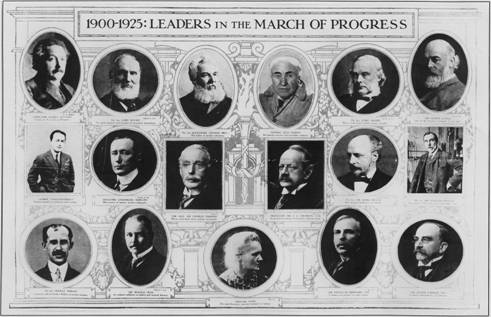

George (Gogu) Constantinescu
Date biografice
George (Gogu) Constantinescu s-a născut în Craiova, la 4 octombrie 1881, fiu al unui profesor de matematică şi nepotul unui inginer. Încă din copilărie manifesta interes pentru ştiinţă şi în liceu şi-a transformat camera într-un adevărat laborator de fizică şi chimie. A realizat în acea perioadă o lampă electrică cu mercur, acumulatori, baterii, motoare, un calculator mecanic. Tatăl său a murit când Gogu Constantinescu avea doar 15 ani.
George (Gogu) Constantinescu a fost un inovator, inventator, savant, om de stiinta si inginer roman. George Constantinescu s-a nascut la 4 octombrie 1881, la Craiova. Tatal sau, Gheorghe Constantinescu, a fost profesor de matematica si directorul liceului din localitate care in prezent ii poarta numele lui Nicolae Balcesu.
Inclinatiile tehnice ale lui George Constantinescu s-au manifestat inca din copilarie, pasionat fiind de experiente complicate pentru varsta lui. A urmat liceul la Craiova si chiar daca aptitudinile lui erau spre fizica, chimie si matematica, parintii l-au indrumat sa invete cu aceeasi straduinta toate materiile.
A terminat liceul in 1899 si in acelasi an s-a inscris la celebra “Scoala de poduri si sosele” din Bucuresti unde in 1904 a terminat studiile superioare ca sef de promotie. Dupa absolvire, a fost angajat la Serviciul de poduri si sosele al statului ca specialist in beton armat, a carui utilizare in constructii era pe atunci in faza de pionierat.
Betonul armat
În 1904 a absolvit Şcoala Naţională de Poduri şi Şosele ca şef de promoţie. În timpul studiilor şi după absolvire s-a preocupat de demonstrarea utilităţii unui material de construcţii nou, betonul armat, atât teoretic, cât şi practic. A proiectat numeroase construcţii cu structura din beton armat, dar nu a găsit sprijin la guvernul vremii pentru a-şi pune în practică ideile şi a înfiinţat propria firmă, împreună cu inginerul Tiberiu Eremia. Costurile reduse ale betonului armat i-au adus câştigarea unei licitaţii de 5 poduri.
În acea perioadă s-a construit drumul Bucureşti-Doftana şi Gogu Constantinescu a avut ideea primului material care seamănă cu asfaltul de astăzi. S-a ocupat de asemenea şi de utilaje şi mijloacele de transport, găsind soluţii de îmbunătăţire sau creând altele noi.
A fost printre primii care a folosit betonul-armat în construcția clădirilor din România - printre clădirile construite de acesta: Cazinoul din Constanța, Castelul de apă de la Periș, podurile de peste râul Siret de la Adjud, Răcătău, Roman, Palatul Patriarhiei, Hotelul Athénée Palace, Marea Moschee din Constanţa (Moscheea Carol I).
Sonicitatea
A plecat în Marea Britanie unde s-a stabilit şi a introdus o nouă ramură a mecanicii mediilor continue numită sonicitate. În 1918 a publicat lucrarea The Theory of Sonics.A treatise on transmission of power by vibrations. S-a preocupat apoi de aplicaţiile practice ale acestei ştiinţe, în special din electrotehnică.
Este autorul a numeroase invenţii ca: motoarele, pompele, ciocanele şi perforatoarele sonice, injectoarele sonice, convertizoare de cuplu (cutii de viteze sonice), generatoare de energie sonică, aparate pentru transmisii şi receptoare ale acestei energii. A realizat dispozitivul de tragere la orice turaţie a motorului prin discul format de palele elicei în rotaţie, numit G.C. Gear (Constantinesco Fire Control Gear). Guvernul britanic a realizat in 1918 pentru inginerul român Gogu Constantinescu laboratorul din West Drayton numit Uzinele Sonice.
Gogu C. Constantinescu a demonstrat că lichidele sunt compresibile (tot domeniul sonicităţii se bazează pe acest lucru) deşi toate manualele de fizică susţin şi azi exact opusul. I-au fost refuzate primele brevete în America deoarece conducerea institutului de patente a considerat nerealizabile invenţiile tocmai datorită teoriei incompresibilităţii lichidelor. A fost responsabil pentru crearea unui nou domeniu al mecanicii, numit sonicitate, care descrie transmiterea energiei prin vibrații în corpurile fluide sau solide. A aplicat noua teorie în numeroase invenții: motorul sonic, pompa sonică,ciocanul sonic și altele. Printre alte realizări ale sale se mai numără și un dispozitiv de tragere printre palele elicei indiferent de turația acesteia și primul schimbător de viteze automat. A participat activ la construcția de avioane engleze, tipul Bristol, în perioada cât a locuit în Anglia.
Familia
În 1914 s-a căsătorit cu Sandra Cocorescu şi au divorţat după 12 ani. S-a recăsătorit cu Eva Litton, o femeie cu simţul afacerilor, care-l va ajuta să depăşească problemele financiare.
S-a căsătorit cu Alexandra (Sandra) Cocorescu în Richmond, Londra , în decembrie 1914. Cuplul s-a mutat la Wembley și, după ce s-a născut fiul lor, Ian s-au mutat la Weybridge . [2] Căsătoria s-a destrămat în anii 1920 și s-a încheiat în divorț. S-a căsătorit apoi cu Eva Litton, iar cuplul s-a mutat în casa Oxen, lângă Lacul Coniston . Eva a avut doi copii, Richard și Michael, printr-o căsătorie anterioară.
Echipamentul de sincronizare
Echipamentul său de sincronizare a mitralierelor hidraulice a permis pistoalelor montate în avion să tragă între lamele de filare ale elicei. Uneltele de sincronizare Constantinesco (sau „CC“ unelte de pescuit ) au fost folosite pentru prima dată operațional pe DH4s de No. 55 escadron RFC din martie 1917, în timpul primului război mondial , și au devenit rapid echipament standard, înlocuind o varietate de unelte mecanice. Ele au continuat să fie utilizate de Royal Air Force până la cel de-al Doilea Război Mondial - Gloster Gladiator fiind ultimul luptător britanic care a fost echipat cu echipament "CC".
Recunoasterea
Cu ocazia împlinirii a 125 de ani de la nașterea ilustrului nostru compatriot, s-a încercat umplerea golului de informare privind realizările sale prin apariția a trei lucrări semnificative:„Inventeurs de genie. Gogu Constantinescu.”, Editura Mediamira, Cluj-Napoca 2006, „Tratat de Teoria Sonicității”, (600 pagini) și „Integrala Invențiilor” (4 volume, peste 2000 pagini), Editura Performantica a Institutului Național de Inventică, Iași 2006 (lucrări apărute cu sprijinul Autorității Naționale pentru Cercetare Științifică).
Recunoașterea lui Gogu Constantinescu pe plan internațional este atestată printr-un tablou publicat de revista britanică „The Graphic” în anul 1926, în care sunt prezentate ilustre personalități științifice ale vremii, începând cu Einstein, Edison, Kelvin, Gogu Constantinescu (primul pe rândul al doilea), Rutherford, Marie Curie etc.

Pionierii pe calea progresului. De la stânga la dreapta și de sus în jos: Einstein, Kelvin, Alexander Graham Bell, Edison, Joseph Lister, Oliver Lodge, Gogu Constantinescu, Marconi, Ch. Parsons, J.J. Thomson, James Dewar, William Ramsay, D. Wright, Donald Ross, Marie Curie, Ernest Rutherford, Joseph Larmor
Constantinescu pe un timbru românesc din 2016
Podul de beton din parcul Carol , București , proiectat de G. Constantinescu și dedicat în 1906. A fost primul pod de beton cu grinzi drepte din România.
Reclamă auto Constantinesco
Unul dintre cele două poduri Lainici proiectate de Constantinescu